Tutorial Admin
Panduan bergambar untuk menjalankan ujian berbasis komputer di sekolah — dari menyiapkan data sampai membaca hasil.
Urutan bab mengikuti pekerjaan, bukan urutan menu. Sekolah disiapkan sekali; tahun ajaran berjalan setahun; event dibuat setiap kali ada ujian. Karena itu bab-bab di bawah tidak bisa ditukar urutannya — setiap bab memakai hasil bab sebelumnya.
-
BAB 1
Masuk & berandaAkun dibuatkan sekolah. Beranda memberi tahu apa yang sedang berjalan.
-
BAB 2
Menyiapkan sekolahProfil, logo, zona waktu, identitas aplikasi, dan pengaturan bawaan.
-
BAB 3
Tahun ajaranWadah yang menaungi kelas, siswa, dan event. Tanpa ini, event tidak bisa dibuat.
-
BAB 4
Kelas & mata pelajaranSiapa duduk di kelas mana, dan siapa mengajar apa.
-
BAB 5
Ruang & penggunaRuang ujian beserta kapasitasnya, dan akun semua peran — termasuk impor massal.
-
BAB 6
Bank soalMelihat soal yang disusun Guru, tanpa bisa menyuntingnya.
-
BAB 7
Membuat eventSatu kegiatan ujian, dan sebelas langkah kesiapan yang dijaga aplikasi.
-
BAB 8
Peserta & jadwalMenarik peserta, memasang paket soal, menyusun ujian dan sesi.
-
BAB 9
Hari-HPenempatan kursi, pengawas, token, presensi, dan papan monitoring.
-
BAB 10
Hasil & laporanPublikasi nilai, ekspor laporan, dan membaca log aktivitas.
Istilah yang dipakai
- Event — satu kegiatan ujian, misalnya “Asesmen Sumatif Akhir Semester”. Satu event berisi banyak ujian.
- Ujian — satu mata pelajaran yang diujikan, dengan paket soal dan durasinya sendiri.
- Sesi — satu kesempatan pengerjaan pada jam tertentu. Satu ujian bisa punya dua sesi, misalnya pagi dan siang.
- Peserta — siswa yang didaftarkan ke event. Mereka baru punya kursi setelah ditempatkan ke ruang.
1. Masuk & beranda
Akun Admin dibuatkan sekolah. Tidak ada pendaftaran mandiri, dan tidak ada tautan aktivasi.
Seluruh peran masuk lewat layar yang sama. Aplikasi yang menentukan ke mana Anda diarahkan sesudahnya — Admin mendarat di ringkasan sekolah, bukan di daftar event.
-
Buka alamat aplikasi. Layar pertama meminta dua hal: username dan sandi.
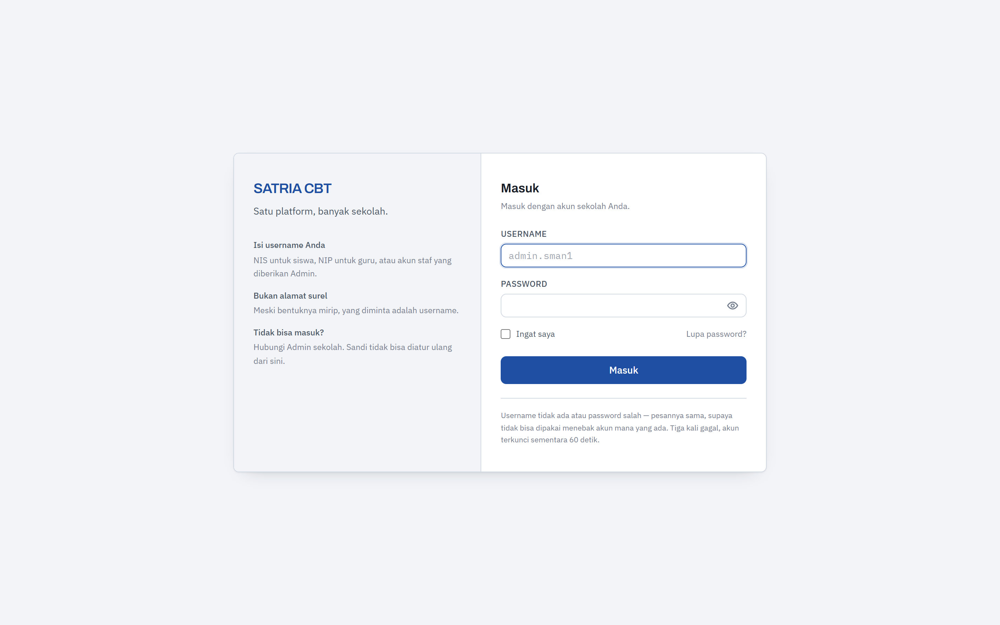
Isi username yang diberikan sekolah — bukan alamat surel, meskipun bentuknya mirip. -
Tekan Masuk. Anda akan diarahkan ke Ringkasan sekolah.
Bila sandi tidak terbaca
Tombol bergambar mata di dalam kolom sandi menampilkan isinya sementara. Sandi tetap tersembunyi secara bawaan — tombol itu hanya untuk memeriksa apa yang baru saja diketik.

Apa yang dikatakan beranda
Beranda menjawab satu pertanyaan: apa yang sedang berjalan hari ini? Tiga bagiannya diurutkan sesuai kepentingan.
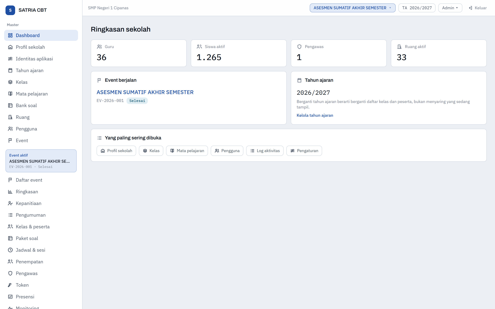
Di ponsel
Pada layar sempit, kartu keterangan menyusut menjadi kepala, dan formulirnya naik sehingga kedua kolom isian dan tombol Masuk terbaca tanpa menggulir.
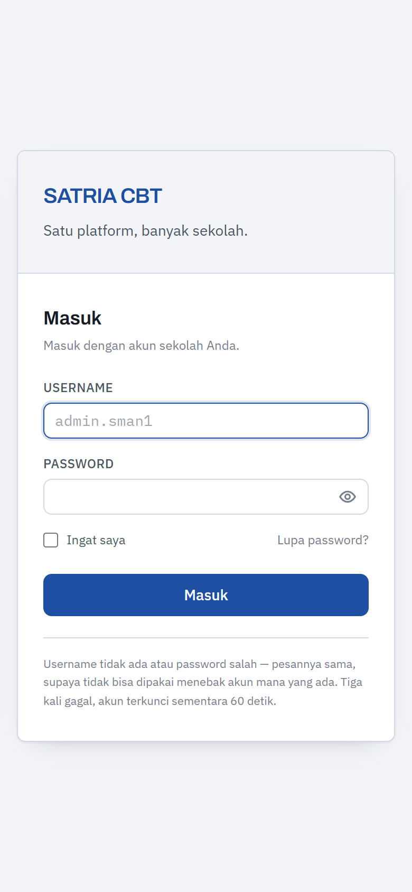
Event berjalan
Bagian ini hanya menampilkan event yang statusnya masih aktif. Event yang sudah selesai atau diarsipkan tidak muncul di sini — dan itu disengaja: beranda yang menampilkan event selesai membuat Admin membuka kegiatan yang sudah tidak berjalan.
Event aktif di sidebar
Perhatikan kotak biru di sidebar kiri: Event aktif. Sekali Anda membuka sebuah event, ia tertinggal di situ, dan seluruh menu event (Kepanitiaan, Peserta, Jadwal, dan seterusnya) berbicara tentang event itu. Berpindah event berarti kembali ke Daftar event lalu memilih yang lain.
Yang paling sering dibuka
Daftar pintasan ini dihitung dari riwayat pemakaian, bukan dipilih manual. Pada sekolah yang baru dipasang, daftarnya masih pendek — itu wajar.
2. Menyiapkan sekolah
Dikerjakan sekali di awal. Empat laman, dan hanya satu di antaranya yang memengaruhi jalannya ujian.
Bab ini bukan tentang mengisi kolom. Yang perlu Anda pahami adalah mana yang mengikat: satu salah isi di sini bisa membuat jam sesi ujian meleset beberapa jam tanpa pesan galat apa pun.
Profil sekolah

Zona waktu — satu-satunya isian yang benar-benar berbahaya
Aplikasi ini menyimpan jadwal sebagai jam dinding sekolah. Zona waktu menentukan jam berapa “07.00” itu sebenarnya. Bila salah, tidak ada galat: aplikasi tetap berjalan, sesi tetap terbuka, hanya saja terbuka beberapa jam lebih awal atau lebih lambat dari yang Anda maksud.
Tiga pilihan yang tersedia:
- WIB — Asia/Jakarta (UTC+7)
- WITA — Asia/Makassar (UTC+8)
- WIT — Asia/Jayapura (UTC+9)
NPSN dan kode sekolah terkunci
Kedua kolom bertanda terkunci. NPSN dipakai untuk mengenali sekolah Anda di antara banyak sekolah lain, dan kode internal dipakai aplikasi. Bila salah, hubungi pemasang aplikasi — bukan diubah sendiri.
Logo
Logo muncul di kop berita acara, laporan hasil, dan kartu peserta. Unggahannya lewat tombol Ganti logo tersendiri, bukan menyatu dengan tombol Simpan profil — supaya menyimpan perubahan alamat tidak ikut mengunggah ulang berkas.
Papan publik pengawas
Saklar di bagian ini menyalakan alamat publik /papan/<slug>: satu halaman tanpa login yang menampilkan sesi yang sedang berjalan. Halaman itu dibuka pengawas di HP, atau ditempel di layar ruang guru.
Identitas aplikasi
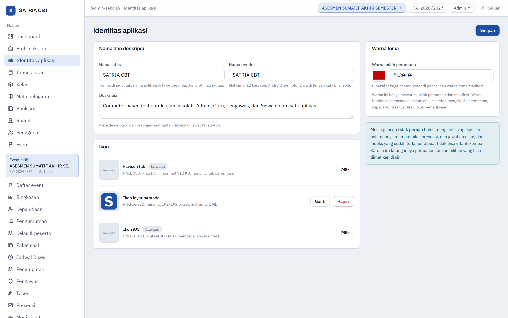
Bagian ini tidak memengaruhi ujian sama sekali. Isinya yang dibaca peramban: judul tab, ikon, dan warna bilah atas di HP.
- Nama situs — tampil di judul tab dan pratinjau tautan saat dibagikan.
- Nama pendek — maksimal 12 karakter. Android memotongnya di tengah kata bila lebih panjang.
- Deskripsi — meta description, dibaca mesin pencari dan WhatsApp saat tautan dibagikan.
- Ikon — tiga jenis: favicon (tab), ikon (layar beranda), dan apple (iOS).
Pengaturan sekolah

Lima tab: Ujian, Keamanan, Nilai, AI, dan Notifikasi.
Tiga kolom pada tab Ujian yang perlu dipahami:
- Durasi token berlaku — berapa lama token sesi tetap sah setelah dibuka pengawas. Terlalu pendek: pengawas harus membacakan ulang di tengah ujian. Terlalu panjang: token yang bocor tetap berlaku sepanjang hari.
- Simpan otomatis tiap — jeda antar penyimpanan jawaban. Menaikkannya mengurangi beban server tetapi memperbesar jawaban yang hilang bila perangkat siswa mati.
- Ambang pelanggaran bawaan — jumlah pelanggaran sebelum ujian siswa terkunci.
3. Tahun ajaran
Wadah yang menaungi kelas, siswa, dan event. Tanpa satu pun tahun ajaran aktif, event tidak bisa dibuat.
Ini bukan formalitas administrasi. Tahun ajaran menentukan kelas mana yang dihitung “kelas sekarang” — dan karena itu menentukan siswa mana yang bisa ditarik menjadi peserta ujian. Aplikasi menolak membuat event tanpa tahun ajaran aktif, dan penolakannya berupa kalimat yang menyuruh Anda kembali ke sini.
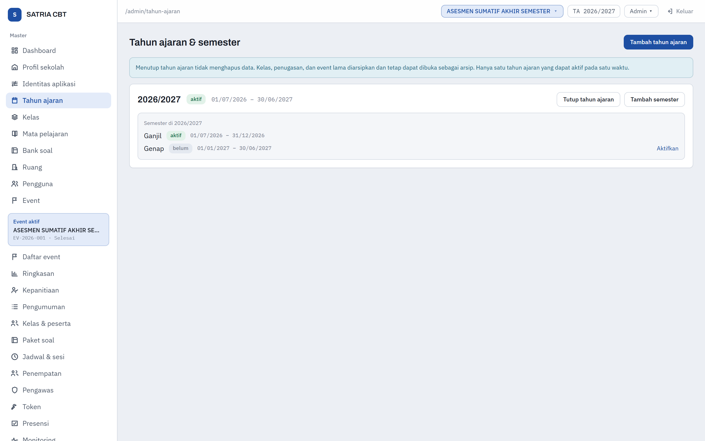
-
Tekan Tambah tahun ajaran. Isi nama (misalnya
2026/2027), tanggal mulai, dan tanggal selesai. -
Tekan Aktifkan pada tahun ajaran yang baru dibuat.
-
Tambahkan semesternya lewat Tambah semester — Ganjil dan Genap — lalu tekan Aktifkan pada salah satunya.
Menutup tahun ajaran
Tombol Tutup tahun ajaran tidak menghapus apa pun. Ia hanya menandai bahwa tahun itu sudah berakhir, sehingga daftar kelas dan siswa berhenti menampilkannya sebagai pilihan aktif. Riwayatnya tetap ada dan tetap bisa dibaca.
Satu tahun aktif pada satu waktu
Menekan Aktifkan pada tahun ajaran lain otomatis menonaktifkan yang sedang aktif. Tidak ada keadaan dua tahun aktif sekaligus, dan karenanya tidak ada pertanyaan “kelas yang mana yang dipakai?” saat menarik peserta.
4. Kelas & mata pelajaran
Siapa duduk di kelas mana, dan siapa mengajar apa. Dua laman, dan keduanya bisa diisi massal lewat berkas.
Kelas
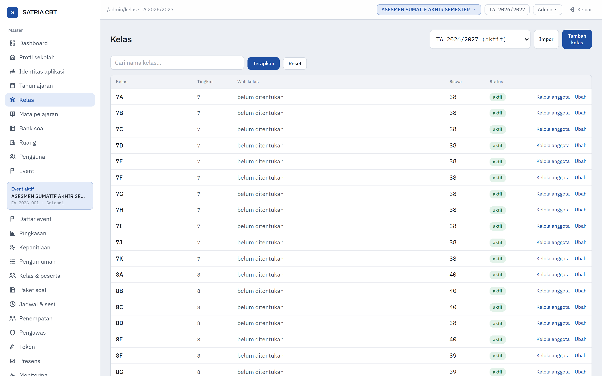
Kelas punya tiga hal yang dipakai aplikasi:
- Tingkat — dipakai menyaring mata pelajaran yang relevan saat memasang paket soal.
- Wali kelas — hanya keterangan; tidak memberi hak akses apa pun.
- Anggota — siswa yang masuk kelas ini. Daftar inilah yang ditarik menjadi peserta event.
-
Tekan Tambah kelas, isi nama dan tingkatnya.
-
Klik nama kelas untuk membuka daftar anggotanya, lalu tambahkan siswa.
Mata pelajaran

Mata pelajaran dikelompokkan menurut tingkat dengan sengaja: satu mapel yang sama bisa ada di beberapa tingkat, dan daftar rata membuat keduanya sulit dibedakan.
Menugaskan guru ke mata pelajaran
Mapel yang belum punya guru tidak bisa dipakai untuk mengajar, tetapi tetap bisa diujikan. Yang menolak hanyalah penugasan mengajar — bukan pembuatan ujian.
Mengisi massal lewat berkas
Baik kelas maupun mata pelajaran punya tombol Impor. Keduanya bekerja sama: unduh template, isi, unggah, lalu periksa pratinjaunya sebelum apa pun disimpan.
-
Tekan Impor, unduh templatenya, isi di luar aplikasi.
-
Unggah. Aplikasi menampilkan pratinjau baris per baris — mana yang akan dibuat, mana yang akan diperbarui, dan mana yang ditolak beserta alasannya.
-
Periksa, lalu konfirmasi. Tidak ada yang tersimpan sebelum langkah ini.
5. Ruang & pengguna
Ruang ujian beserta kapasitasnya, dan akun semua peran. Dua-duanya bisa diisi massal.
Ruang ujian

Ruang menyimpan dua angka yang berbeda dan sering tertukar:
- Kapasitas — berapa siswa bisa ditempatkan di ruang ini.
- PC — berapa perangkat tersedia. Angka ini keterangan, bukan pembatas; aplikasi tidak menolak penempatan karena jumlah PC kurang.
Tautan masuk ruang dan kode pengawas
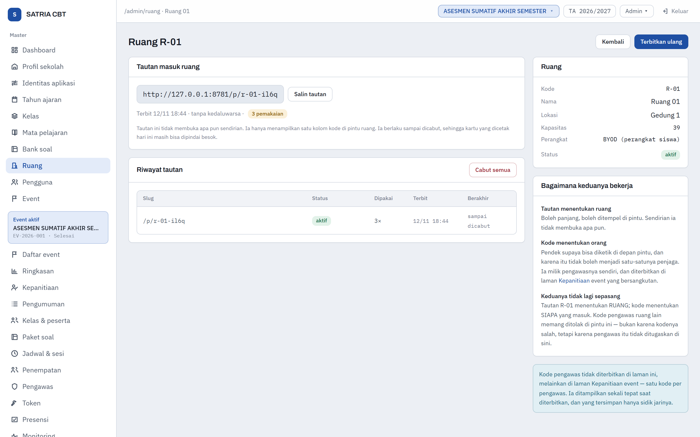
Ada dua hal berbeda di laman ini, dan keduanya sering tertukar:
- Tautan masuk ruang — alamat yang dibuka pengawas untuk masuk ke ruang itu tanpa akun. Bisa dicabut kapan saja, dan yang sudah dicabut langsung berhenti bekerja.
- Kode pengawas — angka yang dibacakan kepada pengawas, dicetak pada kartu. Terpisah dari tautan, dan punya masa berlaku sendiri.
Tautan yang tercetak pada kartu tidak bisa dibatalkan oleh penerbitan ulang kode. Karena itu tombol Terbitkan ulang hanya menyentuh baris yang belum punya kode — kartu yang sudah di tangan pengawas tidak mati mendadak.
Pengguna
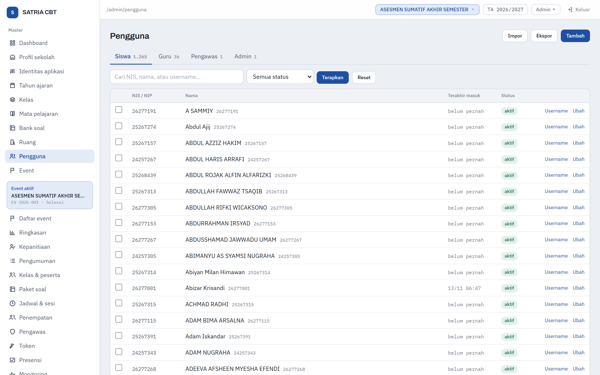
Empat peran, dan masing-masing melihat aplikasi yang sangat berbeda:
- Admin — seluruh menu sekolah. Anda.
- Guru — bank soal, paket soal, dan koreksi uraian.
- Pengawas — portal ruang dan presensi. Tidak bisa melihat soal.
- Siswa — jadwal ujian, pengerjaan, dan nilai yang sudah dipublikasikan.
Mengganti username
Username berdiri sendiri, bukan kolom di dalam form Ubah. Alasannya praktis: username tertempel di kartu login yang dipegang siswa, dan satu salah ketik yang tidak disadari langsung mengunci anak itu pada hari ujian. Tombolnya terpisah supaya tidak tertekan tanpa sengaja saat mengubah nama.
Reset sandi
Tombol Reset mengembalikan sandi ke sandi bawaan aplikasi. Sampaikan ke pemilik akun bahwa sandi lama tidak berlaku lagi — tidak ada surat pemberitahuan otomatis.
Impor pengguna secara massal

-
Unduh template, isi satu baris per pengguna, tentukan perannya di kolom yang tersedia.
-
Unggah. Pratinjau menampilkan tiap baris: dibuat, diperbarui, atau ditolak beserta alasannya.
-
Konfirmasi. Baru pada langkah ini data tersimpan.
Kartu akun
Setelah akun jadi, tombol Ekspor dapat menghasilkan kartu login untuk dicetak dan dibagikan. Satu akun menghasilkan satu halaman PDF; banyak akun sekaligus menghasilkan satu berkas ZIP — dan itu memakan waktu lebih lama, bukan gagal.
6. Bank soal
Melihat soal yang disusun Guru. Admin membaca, tidak menulis — dan perbedaan itu disengaja.
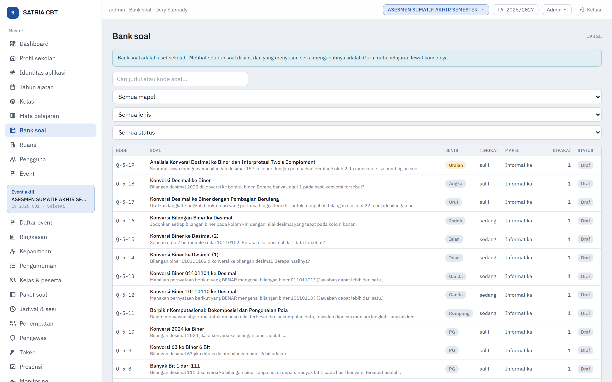
Laman ini lahir dari satu masalah nyata: satu-satunya pintu ke bank soal tadinya adalah konsol Guru, lengkap dengan tombol Builder, Impor, dan Generate AI — tombol-tombol yang server tolak untuk Admin. Admin yang membukanya melihat menu yang mengajarinya untuk tidak memercayai layarnya sendiri.
Sekarang Admin punya laman sendiri: tanpa satu pun tombol yang akan gagal.
Apa yang bisa dan tidak bisa dilakukan
- Bisa — membaca soal, melihat kunci jawaban, rubrik uraian, pembahasan, dan media yang menempel.
- Tidak bisa — membuat, menyunting, menghapus, atau menerbitkan soal. Itu pekerjaan Guru, dan pembatasnya ada di server, bukan hanya di tombol yang disembunyikan.
Kolom “Dipakai”
Kolom ini menghitung di berapa paket soal butir itu dipakai. Angka nol berarti soal itu ada di bank tetapi tidak masuk paket mana pun — jadi tidak akan muncul di ujian mana pun, berapa pun event yang Anda buat.
Status soal tidak menghalangi pemakaian
Kolom Status berisi tiga nilai: Draf (masih disunting penulisnya), Siap (sudah boleh dipakai Guru lain), dan Arsip (tidak dipakai lagi, tetapi tidak dihapus karena dirujuk snapshot dan laporan nilai).
Membaca soal dengan aman
Panel pratinjau menampilkan soal sebagaimana siswa melihatnya, ditambah kunci dan pembahasan yang tidak dilihat siswa. Isinya lengkap untuk setiap jenis soal — pilihan ganda, uraian, rumpang, menjodohkan — karena bentuk kuncinya berbeda per jenis.
7. Membuat event
Satu kegiatan ujian. Aplikasi menjaga sebelas syarat sebelum event boleh dibuka — dan itulah bagian yang paling sering mengejutkan.
Daftar event
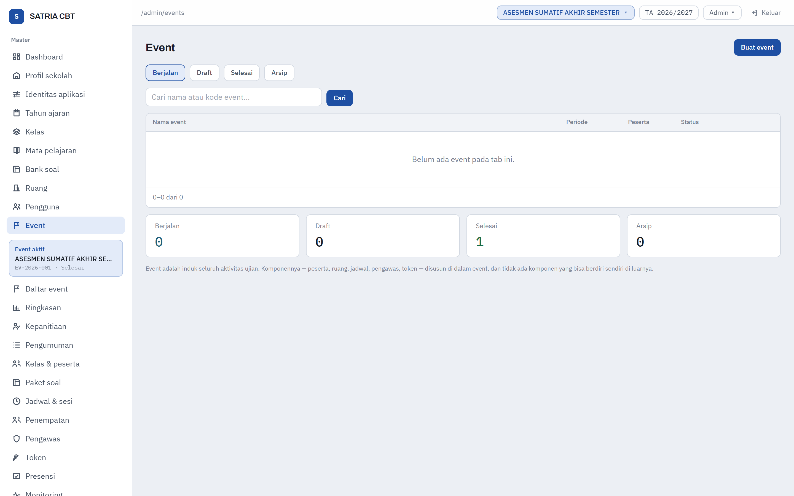
Hanya ada satu event di sekolah contoh ini. Di sekolah yang sudah beberapa semester berjalan, daftarnya memanjang, dan penyaring status di atas tabel menjadi penting.
Membuat event baru
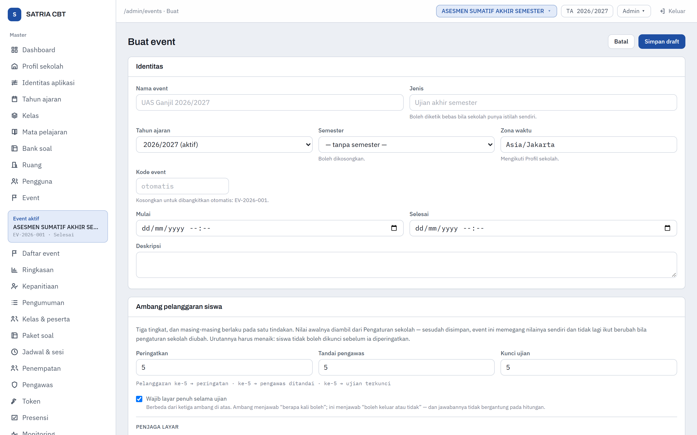
-
Isi nama event. Pakai nama yang dikenali guru dan siswa — nama inilah yang tercetak di berita acara dan laporan hasil.
-
Pilih jenis, periode, dan pastikan tahun ajaran serta semester terisi.
-
Sesuaikan ambang pelanggaran bila perlu. Nilainya disalin dari Pengaturan sekolah saat event dibuat, lalu berdiri sendiri — mengubah Pengaturan kelak tidak mengubah event ini.
-
Tekan Simpan draft. Event lahir berstatus Draft, dan belum bisa dibuka.
Ringkasan dan sebelas langkah kesiapan

Setelah event dibuat, sidebar bertambah satu lapis: menu milik event itu. Ringkasan adalah halamannya, dan di situ ada daftar kesiapan.
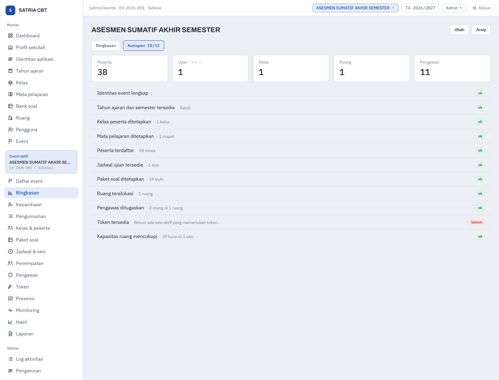
Sebelas butir itu, berurutan:
- Identitas event lengkap — nama, jenis, periode.
- Tahun ajaran dan semester tersedia.
- Kelas peserta ditetapkan — kelas mana yang ikut.
- Mata pelajaran ditetapkan — mapel apa saja yang diujikan.
- Peserta terdaftar — siswa yang benar-benar ikut.
- Jadwal ujian tersedia — ada sesi, dan sesinya punya ruang.
- Paket soal ditetapkan — setiap mapel punya paketnya.
- Ruang teralokasi.
- Pengawas ditugaskan.
- Token tersedia.
- Kapasitas ruang mencukupi — jumlah kursi tidak kurang dari jumlah peserta.
Status event dan perjalanannya
Event bergerak satu arah, dengan satu pengecualian:
Draft → Persiapan → Siap → Berjalan → Selesai → Arsip
- Draft — baru dibuat.
- Persiapan — sedang dilengkapi.
- Siap — gerbang kesiapan lulus. Hanya dari sini event bisa dibuka.
- Berjalan — ada sesi yang sedang dikerjakan siswa.
- Selesai — seluruh sesi tuntas. Aplikasi memindahkannya sendiri, bukan Anda.
- Arsip — disimpan, tidak lagi aktif.
Dibatalkan adalah satu-satunya status final: dari sana tidak ada jalan kembali. Hati-hati menekannya.
Membuka kembali event yang diarsipkan
Mengarsipkan bukan menghapus, dan bisa dibatalkan. Dari event yang berstatus Arsip, tombol pemulihan tersedia dan tujuannya bisa Anda pilih — Draft, Persiapan, Siap, Berjalan, atau Selesai — bukan dikunci ke satu tujuan.
Menghapus event
Event hanya bisa dihapus bila statusnya Draft dan belum punya ujian. Tombolnya tetap terlihat pada event lain, dan penolakannya berupa kalimat yang menjelaskan apa yang harus dilakukan — bukan tombol yang hilang tanpa keterangan.
8. Peserta & jadwal
Menarik peserta dari kelas, memasang paket soal ke mata pelajaran, lalu menyusun ujian dan sesinya.
Tiga pekerjaan di bab ini berurutan dan saling menunggu. Peserta tidak punya kursi sebelum ruangnya dialokasikan; sesi tidak bisa dibuat sebelum ujian ada; ujian tidak bisa dibuat tanpa paket soal. Aplikasi memaksa urutannya lewat daftar kesiapan di Bab 7.
Kepanitiaan
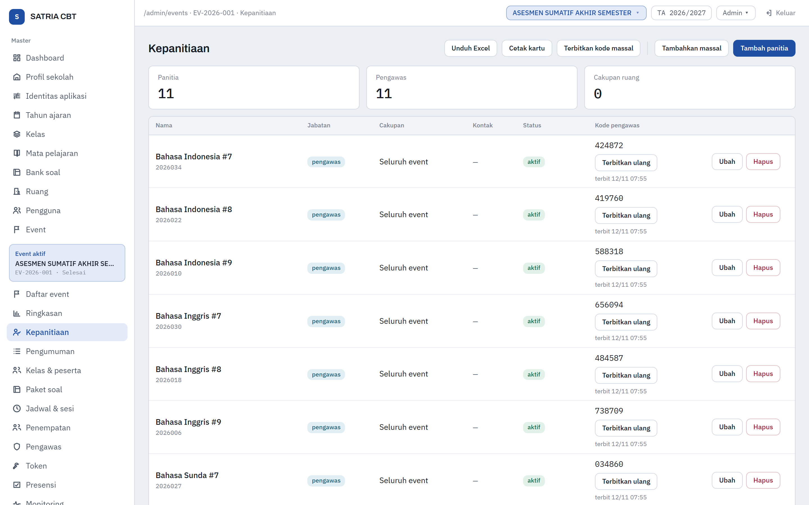
Panitia mendaftar dulu, sebelum hari-H, karena pengawas ruang diambil dari daftar ini.
- Tambahkan massal — satu jabatan satu cakupan, diisi berkelompok.
- Kode pengawas — diterbitkan per orang, dan bisa dicetak pada kartu. Kartu yang sudah dicetak tidak mati oleh penerbitan berikutnya.
- Terbitkan kode massal — hanya menyentuh baris yang belum punya kode.
Pengumuman

Pengumuman menempel pada event, bukan pada sekolah. Pertanyaan “apa yang perlu dibaca siswa” selalu tentang satu kegiatan tertentu, dan pengumuman ujian semester tidak relevan bagi siswa yang sedang menghadapi ujian lain.
Kelas & peserta
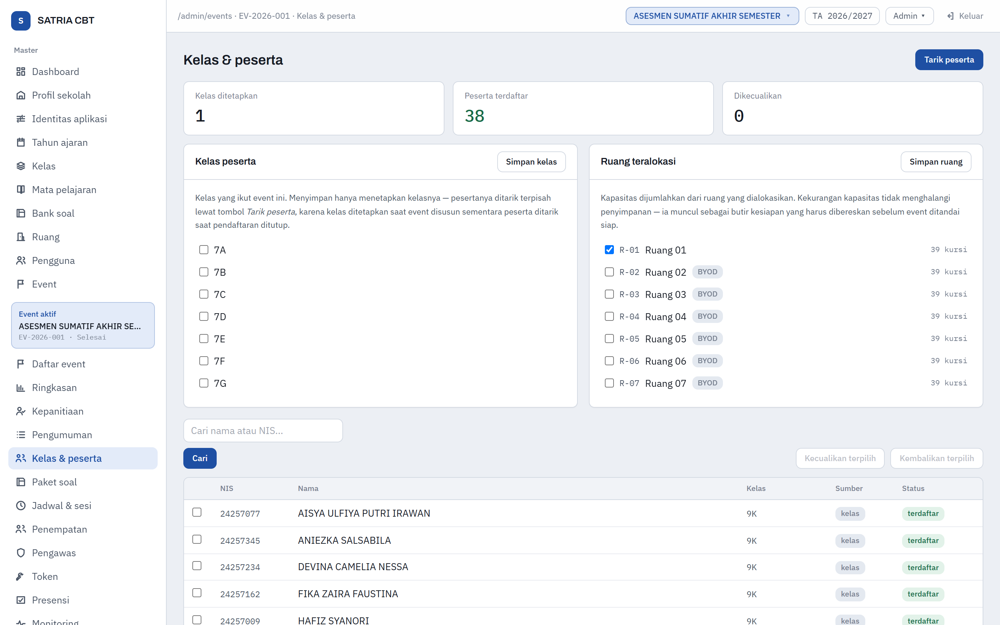
-
Centang kelas yang ikut di bagian Kelas peserta, lalu Simpan kelas. Ini menentukan keranjang siswa yang tersedia.
-
Tekan Tarik peserta. Siswa dari kelas terpilih masuk ke daftar.
-
Bila ada yang perlu dikeluarkan, tandai lalu Kecualikan terpilih — bukan dihapus dari daftar.
“Kecualikan” berbeda dari “hapus”
Peserta yang dikecualikan tetap tercatat pernah terdaftar, dan bisa dikembalikan. Menghapus akan membuat riwayatnya hilang — dan nilai yang sudah ada menjadi tidak bisa ditelusuri ke siapa pemiliknya.
Mata pelajaran & paket soal

-
Centang mapel yang diujikan, lalu Simpan mapel.
-
Untuk tiap mapel, tekan Ganti pada kolom paket soal, pilih paketnya, lalu Simpan.
Paket yang dipasang akan dibekukan saat ujian dibuat: isinya disalin ke ujian, sehingga menyunting soal di bank soal kelak tidak mengubah ujian yang sudah berjalan.

Laman Soal per mata pelajaran memperlihatkan butir yang sudah terpasang, dan menandai yang basi — soal di bank soal yang sudah disunting setelah dibekukan. Ujian tetap memakai salinan lamanya, jadi yang Anda lihat di laman itu adalah yang benar-benar dikerjakan siswa.
Jadwal & sesi
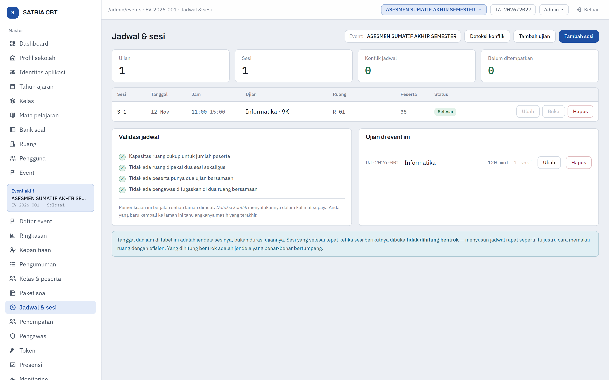
-
Tekan Tambah ujian: pilih mapel, paket, dan durasinya. Satu mapel yang diujikan menjadi satu ujian.
-
Tekan Tambah sesi pada ujian itu: tentukan tanggal, jam mulai, dan jam berakhir paksa.
-
Tekan Deteksi konflik. Benturan ruang, peserta, dan pengawas dilaporkan di sini.
Tiga waktu yang berbeda
- Jam buka — sejak kapan siswa boleh masuk.
- Jam tutup akses — batas terakhir siswa baru boleh mulai.
- Akhir paksa — pada jam ini seluruh pengerjaan dihentikan, apa pun sisanya.
Status sesi
Sesi bergerak Draft → Siap → Berjalan → Selesai. Tombol Buka pada sesi yang masih Draft akan ditolak — sesi harus Siap dulu, dan itu lewat tombol ubah sesi. Sesi yang batal terselenggara memakai Batalkan, bukan Hapus: sesi yang sudah punya berita acara tidak bisa dihapus.
Sesi tidak ditutup dengan sendirinya?
Setiap menit aplikasi memeriksa sesi yang sudah melewati akhir paksa dan menutupnya sendiri. Bila sesi masih berstatus Berjalan jauh setelah jamnya lewat, periksa apakah penjadwal aplikasi (ujian:tutup-sesi) benar-benar berjalan di server.
9. Hari-H
Penempatan kursi, pengawas, token, presensi, dan papan pemantauan. Bab terpanjang, karena inilah harinya.
Penempatan peserta ke ruang
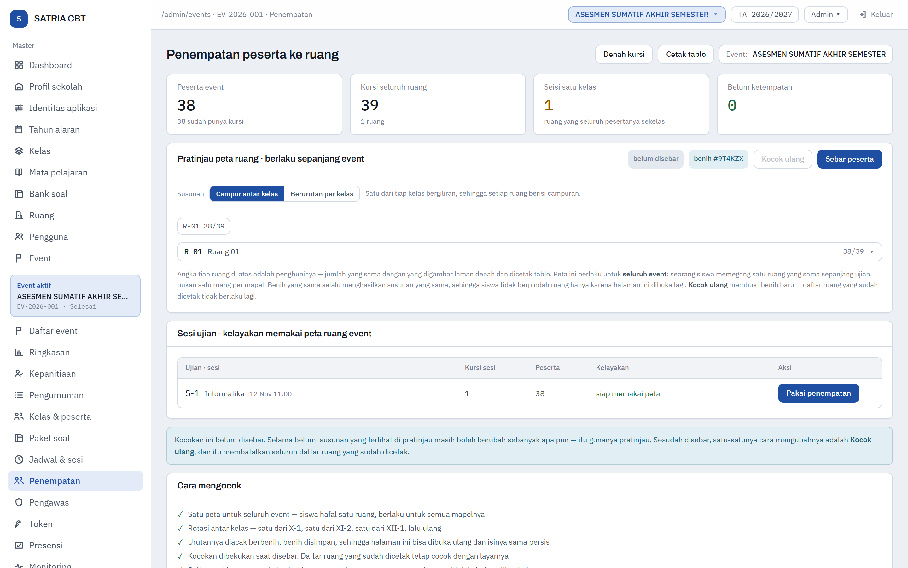
Sampai langkah ini, peserta hanya terdaftar — belum punya kursi. Laman ini yang membagikannya, dan keputusan di sini dicetak lalu ditempel di pintu. Karena itu ada pratinjaunya lebih dulu.
-
Periksa Pratinjau peta ruang. Peta ini berlaku sepanjang event: sekali disebar, ia dipakai semua sesi.
-
Pilih Cara mengocok — Campur antar kelas untuk membaurkan kelas, atau Berurutan per kelas bila ingin anak satu kelas berdekatan.
-
Tekan Sebar peserta. Aplikasi membagi kursi dan menuliskan hasilnya.
-
Periksa tabel Kelayakan: tiap sesi menunjukkan berapa kursi terpakai dari kapasitas.
Denah tempat duduk

Denah tersedia sebagai halaman dan sebagai PDF untuk ditempel di meja. Isinya dihitung dari kocokan yang sudah tersimpan — membuka laman ini tidak mengocok apa pun.
Pengawas & penempatan ruang

-
Tekan Tugaskan otomatis. Aplikasi mengisi ruang yang belum punya pengawas.
-
Periksa hasilnya. Tekan Tugaskan pada baris tertentu untuk mengisi manual, atau Tukar pengawas untuk menukar dua penugasan sekaligus.
Dua pengawas per ruang adalah saran, bukan syarat. Satu pengawas sudah cukup bagi aplikasi, dan kesiapan event tidak akan menghalangi Anda karenanya — tetapi ruang dengan satu pengawas lebih sulit ditangani saat ada kejadian.
Token ujian

Token adalah angka yang dibacakan pengawas di ruang supaya siswa bisa mulai. Ia per sesi, bukan per siswa.
-
Terbitkan token untuk sesi yang akan berjalan, lalu Cetak kartu token untuk dibawa pengawas.
-
Pengawas menekan Baca saat waktunya tiba, lalu membacakannya ke ruang.
-
Bila token bocor, tekan Cabut. Siswa yang sudah masuk tetap mengerjakan; siswa yang belum tidak bisa lagi memakainya.
Presensi

Presensi diisi pengawas dari portal ruang. Laman ini untuk memeriksa dan mengoreksi, bukan untuk mengisi dari nol.
Tiga angka yang perlu diperhatikan: Hadir, Tidak hadir, dan Belum diverifikasi. Angka ketiga yang paling sering terlupakan — siswa yang tidak pernah dipanggil statusnya, dan itu berbeda dari siswa yang dinyatakan tidak hadir.
Monitoring
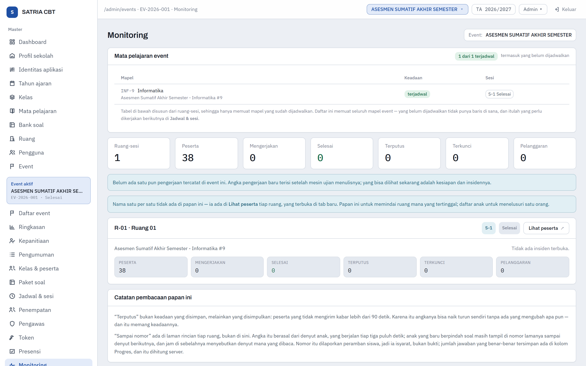
Papan ini menjawab siapa yang sedang mengerjakan, dan siapa yang bermasalah — selama ujian berlangsung.
Yang bisa dilakukan dari sini, dan semuanya tercatat di log aktivitas:
- Buka kunci — membuka pengerjaan yang terkunci karena pelanggaran.
- Reset — membatalkan pengerjaan terakhir dan menghapus nilainya, sehingga anak mengulang dari soal pertama.
- Hentikan — mengunci pengerjaan dengan pesan yang Anda tulis sendiri, dan pesan itulah yang dibaca siswa.
- Reset massal — melakukan reset untuk seluruh peserta satu ruang.
Tombol Lihat peserta membuka satu ruang di tab baru. Itu disengaja: papan lintas ruang disegarkan terus, dan membawanya pindah halaman berarti kehilangan tempat Anda di rekap.
10. Hasil & laporan
Menerbitkan nilai, mengekspor laporan, dan membaca jejak siapa mengubah apa.
Publikasi hasil
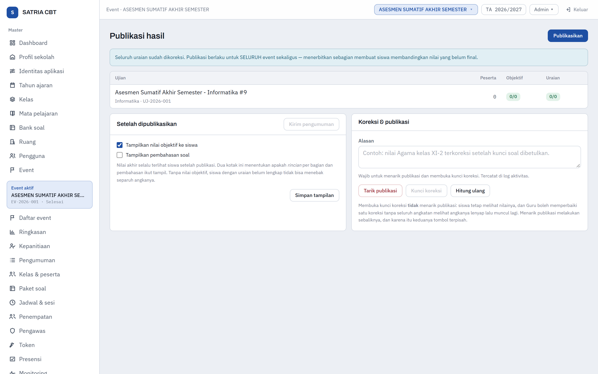
Nilai tidak terlihat siswa sampai Anda menerbitkannya. Publikasi bekerja per event: satu tekanan menampilkan seluruh ujian di dalamnya.
- Publikasikan — hasil mulai terlihat siswa.
- Tarik publikasi — mencabutnya kembali, dan sekaligus membuka kunci koreksi.
- Kunci koreksi — menghentikan perubahan nilai tanpa menarik publikasinya.
- Kirim pengumuman — memberi tahu siswa bahwa nilainya sudah bisa dilihat.
- Hitung ulang — memperbaiki angka setelah kunci jawaban dibetulkan.
Mengatur apa yang terlihat
Setelah dipublikasikan, dua saklar menentukan apa yang boleh dibaca siswa: nilai objektifnya saja atau beserta pembahasan. Keduanya bisa diubah kapan saja — selama publikasinya masih terbuka.
Laporan

Laporan dikelompokkan menurut pertanyaan yang hendak dijawab:
- Nilai per siswa — daftar lengkap dengan seluruh nilainya.
- Rekap kelas — rata-rata dan sebaran per kelas.
- Analisis butir — soal mana yang paling banyak dijawab salah. Berguna untuk menilai mutu soal, bukan mutu siswa.
- Kehadiran — rekap presensi.
- Pelanggaran — kejadian selama ujian berlangsung.
Tiga format ekspor: XLSX untuk diolah, CSV untuk dipindah ke sistem lain, dan PDF untuk diserahkan atau diarsipkan.
Log aktivitas
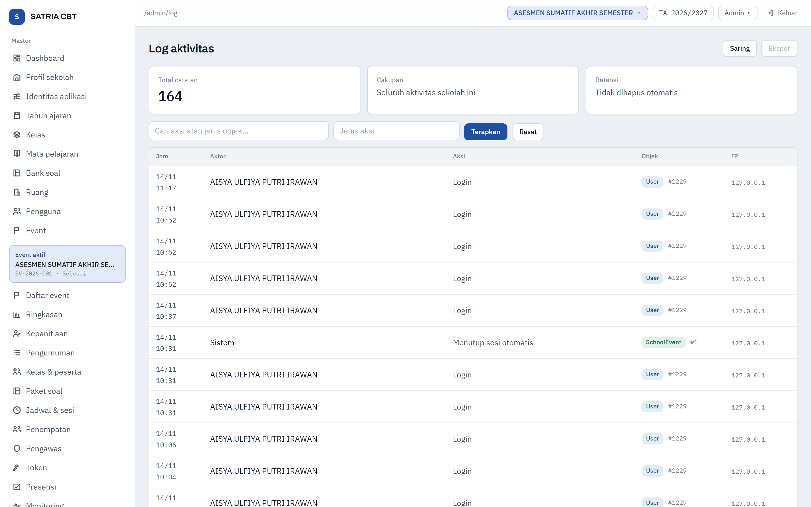
Log mencatat tindakan yang mengubah data: siapa, kapan, dari alamat IP mana. Termasuk tindakan dari bab ini — publikasi, penarikan, reset nilai, pembukaan kunci.
Pakai Saring untuk mempersempit menurut aktor, aksi, atau rentang waktu, lalu Ekspor bila perlu diserahkan sebagai bukti.
Setelah ujian selesai
-
Pastikan seluruh sesi berstatus Selesai. Event berpindah ke Selesai sendiri setelah semua sesinya tuntas.
-
Periksa kolom Uraian di laman publikasi. Bila masih ada yang menunggu, koordinasikan dengan guru mapelnya.
-
Publikasikan, lalu beri tahu siswa.
-
Ekspor laporan yang dibutuhkan, lalu arsipkan eventnya. Mengarsipkan tidak menyembunyikan nilainya dari siswa — ia hanya menghentikan event itu tampil sebagai kegiatan aktif.